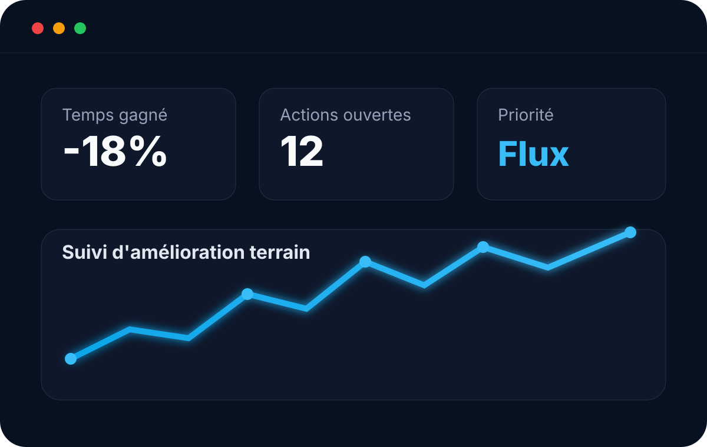
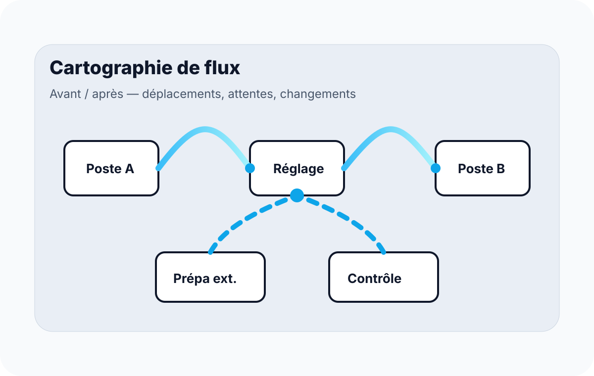
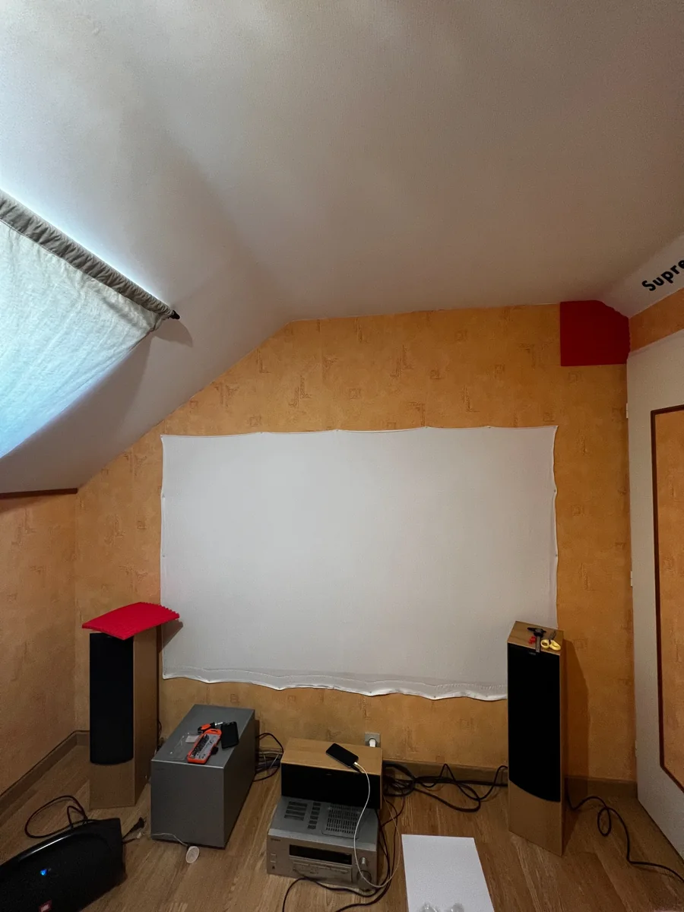

Comprendre le besoin
Échange sur le contexte, le problème réel, les contraintes et les objectifs.
Process
Process intervient sur les situations concrètes : changements de série trop longs, déplacements inutiles, postes mal organisés, suivis Excel fragiles ou manque de visibilité sur les actions à mener.

Amélioration terrain
Le principe est simple : partir du terrain, comprendre ce qui prend du temps, distinguer ce qui est nécessaire de ce qui peut être préparé, déplacé, supprimé ou standardisé.
Observation terrain, chronométrage, séparation des étapes, identification des pertes et des temps d’attente.
Réduction des temps de changement, préparation en amont, checklists et logique proche SMED lorsque le contexte s’y prête.
Analyse des déplacements, implantation d’outils, rangement, zones de préparation et logique de poste.
Fichiers Excel, tableaux d’actions, suivis de devis, factures, stock, planning ou réservations.

Exemples d’intervention
Process peut concerner une entreprise industrielle, un atelier, une activité de service, un événement régulier ou un lieu qui doit être préparé plus vite et plus proprement.
Méthode Process
Échange sur le contexte, le problème réel, les contraintes et les objectifs.
Observation terrain, collecte d’informations, photos, temps, flux et irritants.
Propositions concrètes : checklist, aménagement, standard, fichier de suivi ou outil Excel.
Document clair, outil utilisable, priorités d’action et accompagnement selon le besoin.
Cas concrets possibles
Exemple : préparer l’implantation d’un setup son/lumière dans un lieu pour limiter les déplacements, anticiper les câbles, réduire le temps de montage et fiabiliser l’installation.

Avant Préparation
PréparationProcess